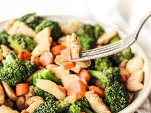

Chicken and Broccoli Stir Fry

A tasty harty and healthy meal
Everyone knows that chicken is an amazing source of protin. Add broccoli, rice and some other vegitables, and you've got yourself and hearty meal that is full of health beiefits to help you get through the long day
Steps
- Combine soy sauce and 1 tablespoon cornstarch in a glass bowl or zip-top bag. Add chicken; stir to coat. Remove all air from baggie before sealing, or cover bowl. Refrigerate at least 30 minutes.